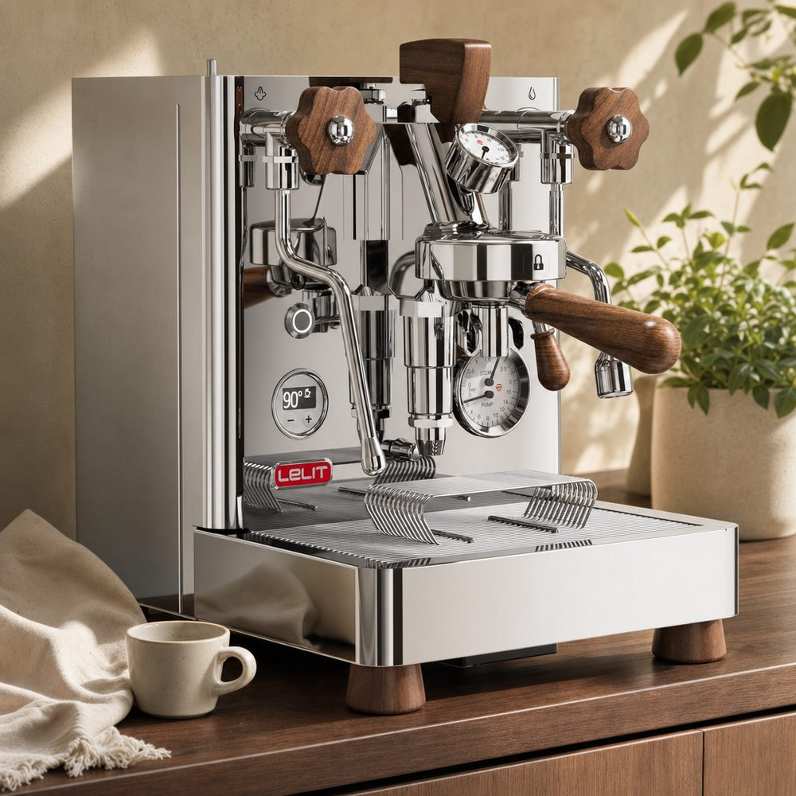

Dualboiler, Rotationspumpe und serienmäßiges Flow-Control-Paddle für unter 2.000 € – die Bianca verspricht die Königsklasse zum Kampfpreis. Was davon im Alltag ankommt, wo die Lernkurve wirklich steil wird und was nach einem halben Jahr bleibt.

Die Bianca ist schmaler als die meisten Dualboiler (29 cm) und fällt sofort durch die Details auf: Paddle, Bedienhebel und Portafiltergriffe aus Nussbaumholz, sauber gebürsteter Edelstahl, ein aufgeräumtes LCC-Display. Cleverstes Alltagsdetail: Der Wassertank lässt sich hinten oder seitlich montieren – die Maschine passt damit auch unter Hängeschränke, an denen andere E61-Maschinen scheitern.
Beim Aufheizen gilt E61-Realität: Die Boiler sind schnell auf Temperatur, aber die massive Brühgruppe braucht 20–25 Minuten für volle Stabilität. Mit smarter Steckdose und Zeitschaltung ist das im Alltag gelöst – die Maschine ist beim ersten Kaffee längst bereit.
Ohne Paddle ist die Bianca ein sehr guter, PID-stabiler Dualboiler. Mit Paddle wird sie zu etwas anderem: Sanfte Pre-Infusion bei niedrigem Fluss, voller Druck in der Hauptphase, langsames Ausklingen – dieses Profiling verwandelt vor allem helle Röstungen. Aromen, die bei 9 bar konstant bitter-adstringierend kippen, werden süß und klar. Nutzerberichte beschreiben übereinstimmend denselben Effekt: Nach zwei, drei Wochen Experimentieren will niemand mehr zurück auf „Pumpe an, Pumpe aus".
Die ehrliche Kehrseite: Flow Control ist eine zusätzliche Variable neben Mahlgrad, Dosis und Temperatur. Die ersten Wochen produzieren auch Fehlschüsse, und wer keine Lust auf Tüfteln hat, bezahlt für ein Feature, das er nicht nutzt – dann tut es auch ein klassischer Dualboiler oder gleich die Mittelklasse.
Der 1,5-l-Dampfboiler liefert Druck für seidigen Mikroschaum in Sekunden, und zwar während der Espresso läuft – der Dualboiler-Workflow halbiert die Zubereitungszeit von zwei Cappuccini gegenüber jedem Einkreiser. Die Rotationspumpe arbeitet dabei so leise, dass morgens niemand aufwacht. Gäste-Betrieb mit vier, fünf Getränken hintereinander bringt die Maschine nicht ansatzweise an ihre Grenze.
Wöchentliches Blindsieb-Rückspülen, regelmäßiges Schmieren des E61-Nockens (alle paar Monate, 10 Minuten), Wasserhärte im Griff behalten – die E61-Plattform ist wartungsintensiver als moderne Thermoblock-Technik, dafür seit 60 Jahren bewährt, komplett zerlegbar und mit überall verfügbaren Standard-Ersatzteilen. Wer die Routine akzeptiert, hat eine Maschine für Jahrzehnte. Wichtigster Praxis-Tipp aus der Community: von Anfang an mit enthärtetem Wasser arbeiten – ein verkalkter Dualboiler ist eine teure Werkstattaufgabe.
Kaufen, wenn du bereit bist, Espresso als Hobby zu betreiben, helle Röstungen liebst und die maximale Ausstattung pro Euro suchst. Nicht kaufen, wenn du eine Ein-Knopf-Lösung willst (→ Komplettpakete wie die Sage Barista Pro), oder wenn du das klassische Manufaktur-Handwerk suchst (→ ECM Technika V Profi PID im Premium-Vergleich).
| Technische Daten | Lelit Bianca V3 (PL162T) |
|---|---|
| Heizsystem | Dualboiler: 0,8 l Brühboiler + 1,5 l Dampfboiler, PID (LCC) |
| Brühgruppe | E61 mit Flow-Control-Paddle (serienmäßig) |
| Pumpe | Rotationspumpe, Tank- oder Festwasserbetrieb |
| Siebträger | 58 mm, Nussbaum-Griffe |
| Wassertank | 2,5 Liter, hinten oder seitlich montierbar |
| Maße (B×T×H) | ca. 29 × 48 × 40 cm |
| Preis ca.* | ab 1.849 € (Stand 24.07.2026) |
Die Bianca V3 liefert Ausstattung, für die andere Hersteller 3.000 €+ aufrufen, und macht Flow Profiling massentauglich. Wer die Lernkurve und die E61-Pflege akzeptiert, bekommt die derzeit klügste Investition der Premium-Klasse.
Aktuellen Preis bei roastmarket prüfen*